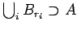
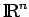

Inhalt Index DeskTop Bronstein

 Dynamische Systeme und Chaos Quantitative Beschreibung von Attraktoren Dimensionen Metrische Dimensionen
Dynamische Systeme und Chaos Quantitative Beschreibung von Attraktoren Dimensionen Metrische Dimensionen


Die Motivation für diese Dimension ergibt sich aus der Volumenberechnung durch das LEBESGUE-Maß. Wird eine beschränkte Menge mit einer Überdeckung aus einer endlichen Anzahl Kugeln Bri mit Radius versehen, so daß also  gilt, erhält man für A das ,,Rohvolumen`` . Bildet man nun über alle endlichen Überdeckungen von A durch Kugeln mit Radius die Größe und läßt  gegen Null gehen, so ergibt sich das äußere LEBESGUE-Maß von
gegen Null gehen, so ergibt sich das äußere LEBESGUE-Maß von  , das für meßbare Mengen mit dem Volumen vol(A) übereinstimmt.
, das für meßbare Mengen mit dem Volumen vol(A) übereinstimmt.
Es seien M der EUKLIDische Raum  oder, allgemeiner, ein separabler metrischer Raum mit Metrik  und
und  eine Teilmenge. Für beliebige Parameter und
eine Teilmenge. Für beliebige Parameter und  wird die Größe
wird die Größe
| (17.40a) |
gebildet, wobei beliebige Teilmengen mit Durchmesser diam sind. Das äußere HAUSDORFF-Maß zur Dimension d von A wird durch
| (17.40b) |
definiert und kann endlich oder unendlich sein. Die HAUSDORFF-Dimension dH(A) der Menge A ist dann der (einzige) kritische Wert des HAUSDORFF-Maßes:
| (17.40c) |
Bemerkung: Die Größen können auch mit Hilfe von Überdeckungen aus Kugeln vom Radius oder, im Falle des  , aus Würfeln der Kantenlänge gebildet werden.
, aus Würfeln der Kantenlänge gebildet werden.
Wichtige Eigenschaften der Hausdorff-Dimension:
| Beispiel |
|
Für die Menge |